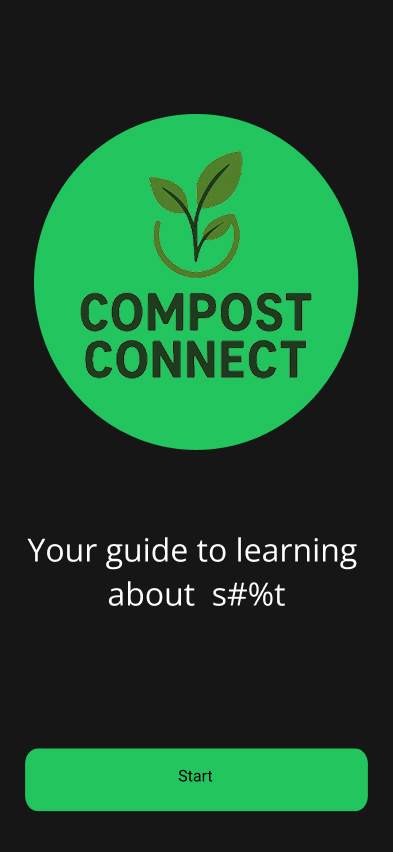

Compost Connect
An educational composting mobile app


This app prototype was developed for my Capstone Research and Development course, where teams were tasked with creating a fully marketable product or service from concept to completion. Compost Connect educates users about composting through bite-sized lessons supported by gamification to encourage continued engagement.
Problem: Although composting has clear environmental benefits, many people avoid it due to uncertainty, lack of knowledge, or intimidation around getting started.
Goals: Design a dedicated learning platform that explains the importance of composting while guiding users through their first steps and motivating long-term participation.
Extensive research was conducted to identify our target user group and gather data that informed core app features. We also analyzed existing educational apps, such as Duolingo, to understand how effective gamification strategies support user engagement.
We developed multiple prototype interations, conducting usability testing on each version. Early designs combined educational content with community features like posts and likes; however, testing revealed that while users appreciated the concept, they found the gamification confusing and the community features unnecessary.
Based on findings discovered from testing, our later iterations removed community features to focus on education. We refined the gamification system to improve clarity and encourage repeated use. For the final prototype, I was responsible for making the wireframe fully interactive and designing the tree-growing gamification experience.
The final interactive prototype effectively addresses the needs of our target users and demonstrates a complete product development process from research through refinement. This project strengthened my experience with collaborative design, usability testing, and cross-team communication.